MY CONTRIBUTIONS
Spelling Block Puzzle Mechanics
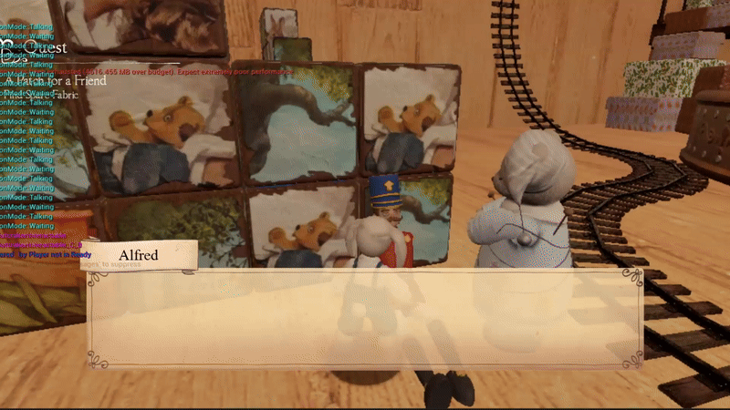
Puzzle Activation
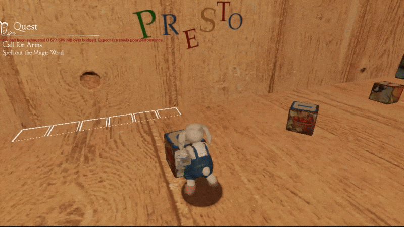
Push and Pull Movement

Block Snapping and Indicators
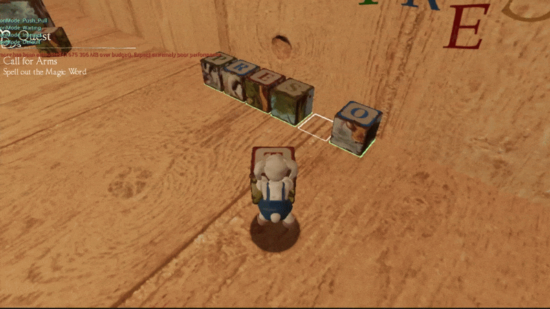
Puzzle Completion Event
- The camera panning effects are achieved using Unreal's built-in View Target setting function.
- The movement is centered on the player regardless of the movement direction.
- The movement used to have a slower rotation rate to be more realistic but feedbacks on it are quite bad.
- When interacting with a block, a simple available space check is done to avoid unstoppable auto movement to a unreachable target interaction spot.
- The block puzzle is both letter and color sensitive.
- Each time the level is loaded, all letters and their colors will be randomized (the right letters will always be included and will not have duplicates).
- When there is a slot being selected, it will emits a brighter glow.
- Whenever a block snaps into a slot, the glow color will turn green if it is the desired block. Otherwise, it will turn red.
- The block will not snap if there is another block on all slots in range, the checking is done through SweepMultiByChannel.
- The next event registered will be called right after puzzle completion as a reward for completing it.
Sliding Puzzle Mechanics
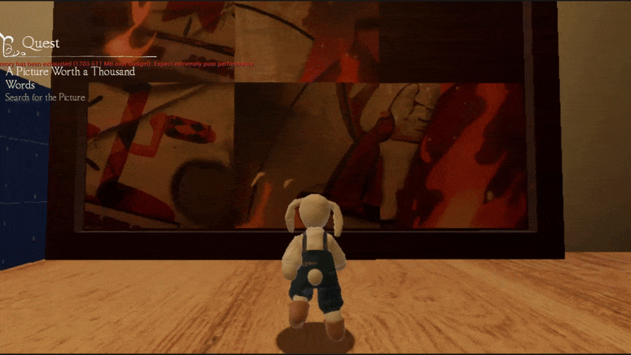
Sliding Puzzle Gameplay
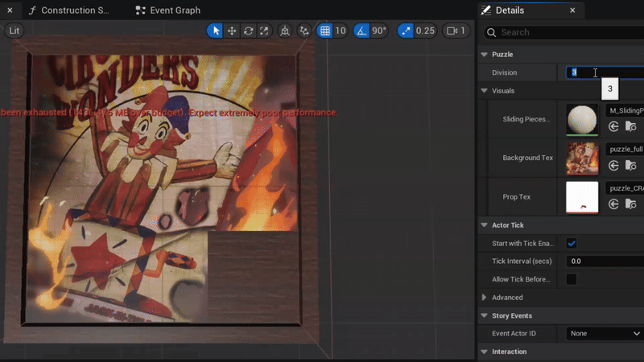
Sliding Puzzle Modifications
- The rules and gameplay is exactly the same with tile sliding puzzle or number klotski, except that the right locations is defined by visual instead of numbers.
- The starting orders are randomized each time the level is loaded, this is done by randomly moving the available tiles certain times (no backward step or undo) on an already solved one.
- I allowed adjustment on number of division and texture even though it only appeared once in the game.
- Each sliding pieces is an instance under an Instanced Mesh Component which uses a plane mesh and the visual is assigned using Texture Coordinate remapping in shader.
- The visuals where the prop in the picture became white is achieved by texture masking in shader.
Jack the Antagonist
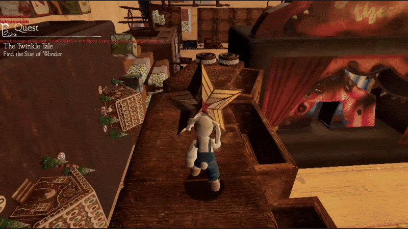
Jack Steal Star

Chasing Game
- These are a series of hard-coded interactions.
- Star stealing process: Jack distract player > player look backward > player look back after a delay (nothing is behind) > Jack already gone.
- Chasing game: Jack poof away from player > Jack "taunt" player > Jack poof to hiding spot > player look for Jack > player touch Jack > dialogue triggered > repeats until no more escape route.
- Whenever Jack's animation involved, all interactions are ignored and the event will automatically proceed upon animation ending.
Completely Linear Events With Chapter Selection Support
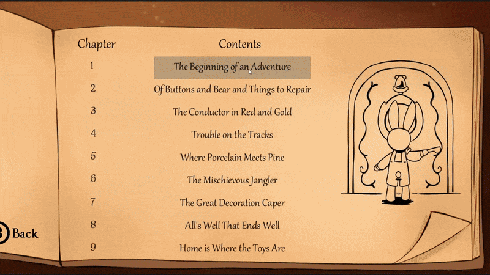
Chapter Selection Demo
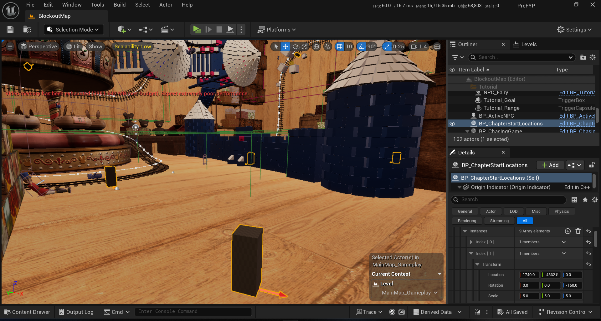
Chapters Start Indicator
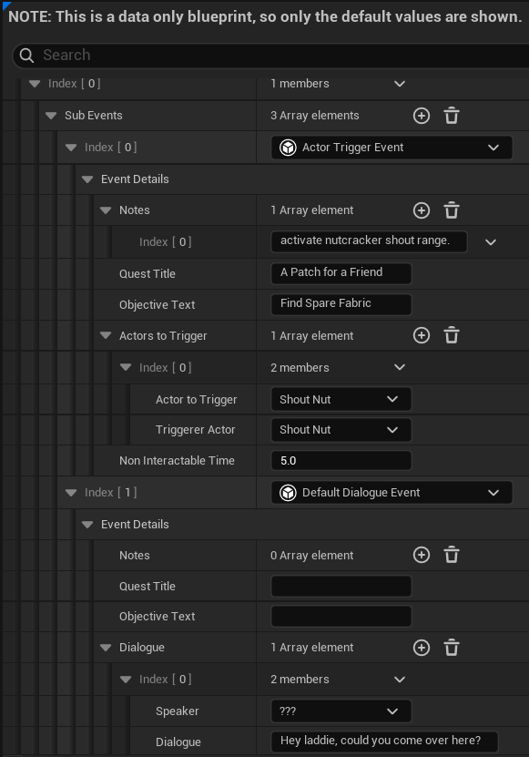
Chapter Blueprint Interface
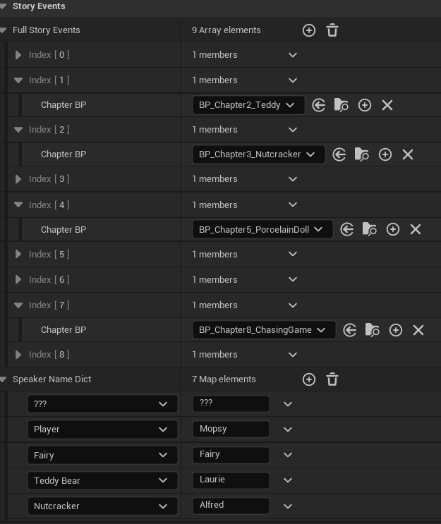
Gameplay Manager Interface
- The event system is designed to support chapter selection by skipping all events in previous chapters.
- Skipping events = interactables and puzzles immediately reaches its "completed" state when the game starts.
- All events are stored in each chapter's own blueprint to allow changes to dialogues while new chapters are being developed.
- The "Gameplay Manager" is a ALevelScriptActor derived class which holds all chapters' blueprints to manage all events execution, events skipping and dialogues.
- The player's starting transform for each chapter is decided by a custom AActor derived class with 2 Instanced Mesh Component as indicators.
- The indicators are editor-only and an array holding a copy of instances' FTransform are manipulated in OnConstruction.
- I also used black screen fading effect (the same one as respawn) whenever the game starts to cover up the visuals of events skipping and teleportation.
Construction Script Based Train and Rail Generation

Train Generation Demo
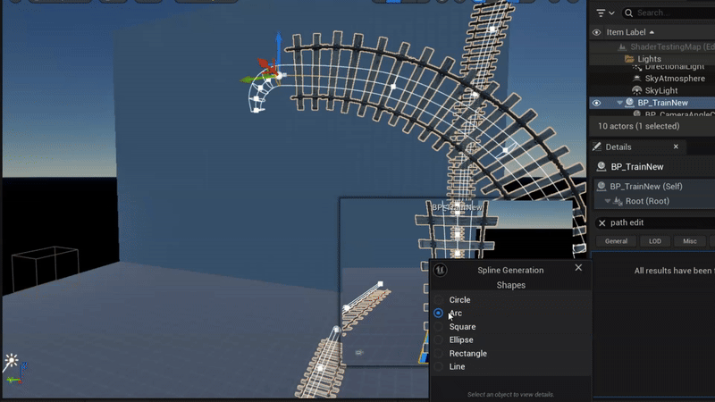
Rail Generation Demo
- Train, Carts and Couplers are automatically arranged along the spline.
- Some attributes for each additional section can be further adjusted instead of following the default values, including: material properties, color of poof effect and the passenger's mesh.
- Rail Generation is similar to any tutorial available online but with all rails share the same distance along the spline.
Procedural Instanced Meshes Generator
Generation Demo
- The function is added to save time when adding instances with repeating pattern(s) in their transforms.
- It works by adding x instances to the Instanced Static Mesh Component based on an array of FTransform with desired number of instances (n) to add for each FTransform, where x = (n1 + i1) * (n2 + i2) * ... * (ns + is); i = include original ticked; s = array size.
- Each of the added instances' transfroms is calculated by FTransform multiplication (relative transform ticked) or addition.
- Each time instances is added, an array of indices is stored and will only be used for the remove function.
- Unfortunately, I'm the only one who ended up using it, due to the rest not familiar or dislike working with transforms calculation.
Custom Spline Arc Rotating Tool

Tool Interface
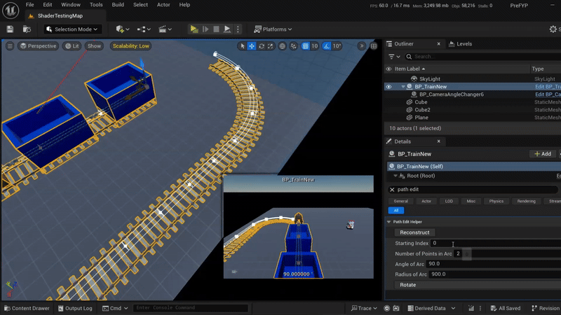
Tool Demo
- Created using IDetailCustomization derived class in ProjectEditor module.
- This tool solves the problem which the arc generated by Spline Generation panel can only turn either left or right but our project needs it to turn up.
- Calculates the differences in locations and tangents relative to the side direction calculated using inputs from the developer.
- The differences are then reapplied to the starting index relative to a new direction which is perpendicular to both forward and original side direction.
Custom Gravity Direction Relative To Train

Custom Gravity Demo
- The implementation mainly follows Unreal's documentation.
- This approach is used as an experiment to figure out the pros and cons compared to rotating the whole world.
Train Riding
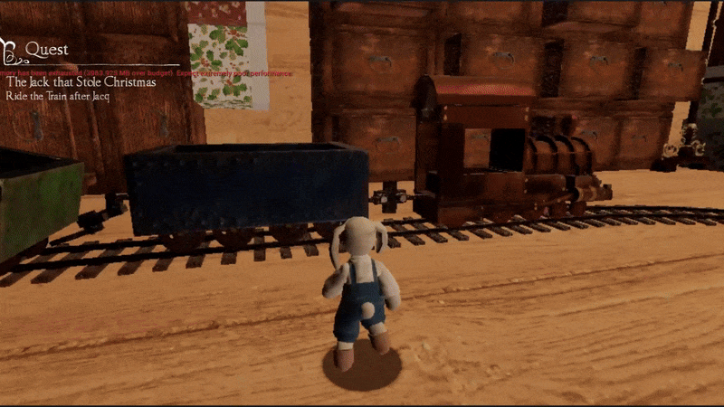
Interaction and Riding
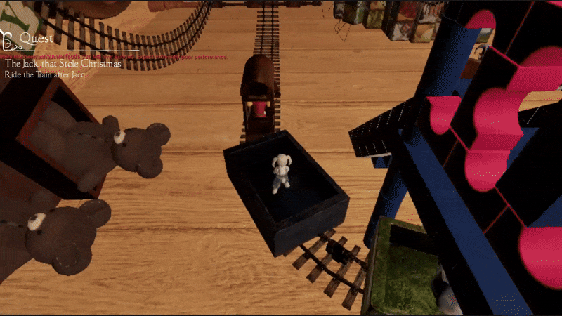
Drop-off
- The whole train is actually interactable.
- When interacting with the train, the player character is set to invisible upon poofing, the camera pan to player mesh on train, then the meshes on train are set to visible upon poofing one by one (to a total of 1 + number of unlocked NPCs).
- While riding, the player can rotate the camera attached on the train but with limited angles.
- When reaching the destination, the player character is teleported to drop off point first, before the view target switch back to it and then all meshes visibility is toggled together with simultaneous poofs.
State Pattern for Player Behavior
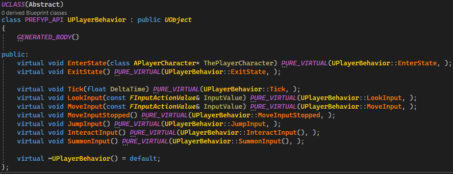
PlayerBehavior Abstract Class
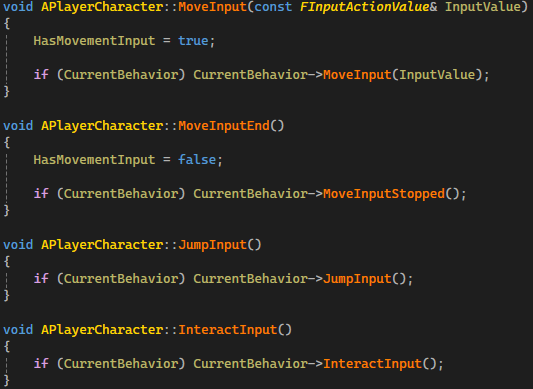
PlayerBehavior Function Calling
- Each behavior has own function (not necessarily unique) for the same input.
- The functions are only implemented in PlayerBehavior derived classes.
- Keep the codes under player actor class cleaner without actual input implementations.
Texture Atlas Remapping
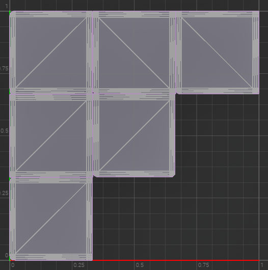
Wooden Block's UV
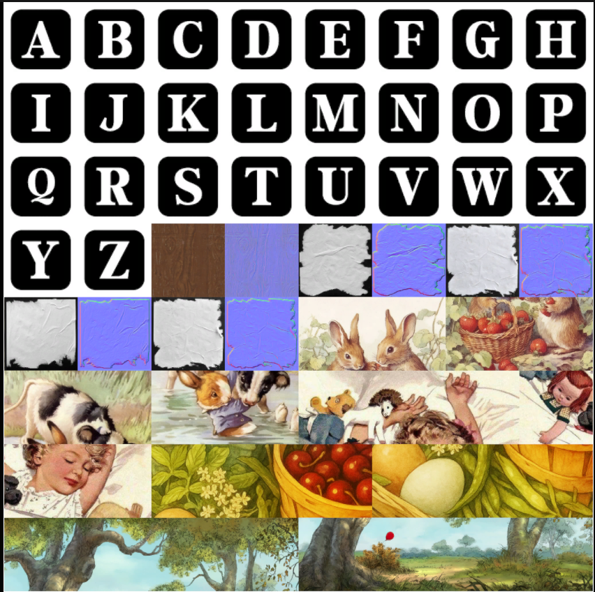
Texture Atlas Used
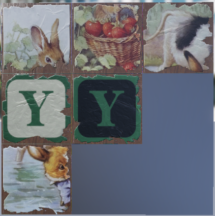
Wooden Block Shader Output
- Wooden block's pattern for each faces, letter and color of the letter are all managed through parameters so I can automate the randomizing process.
- The paper part is outcome of my suggestion after looking at the references provided.
Simple Respawn Effect

Respawn Demo
- Teleport player to preset respawn point, make them face preset direction and reset camera rotation.
- Fading effect achieved by lerping original color and black in post processing.
NPCs Poof In and Out for Dialogue
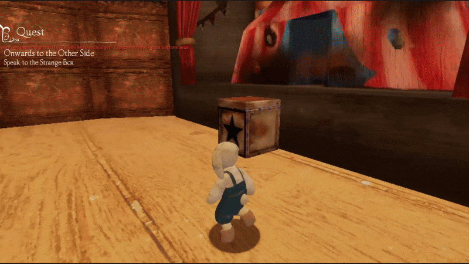
NPCs Poof during Jack Interaction
- This is developed to has the NPCs not being "absent" especially when they talk.
- Empty spaces checking is done through SweepSingleByChannel certain times per frame until empty spaces are found.
3D to '2D' Platforming
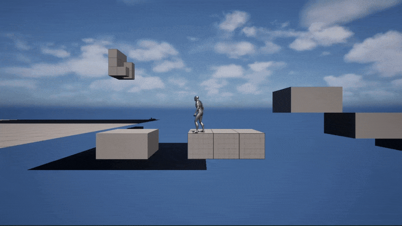
Transition and Platforming Demo
- Transition is triggered when player enters or leaves specified region.
- In 2D mode, up, down and camera controls are ignored.
- The moving platforms' movements follow a spline, which help visualize the movement and also allow curved movements.